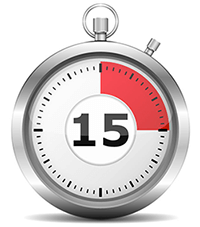
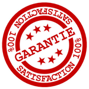

COMMENT ÉDUQUER SON CHIEN EN SEULEMENT 15 MINUTES PAR JOUR !
Une éducatrice professionnelle va vous aider à éduquer votre chiot ou votre chien…
Voulez-vous que votre chien soit bien éduqué et se comporte adéquatement avec vos proches, les autres chiens, et obéisse à toutes les règles… même en votre absence ?
Si vous voulez éduquer votre chien ou votre chiot, vous êtes sur le bon site internet :
Vous êtes sur le point de découvrir comment des milliers de personnes ont éduqué leurs chiens et se sont débarrassées de leurs mauvaises habitudes en l’espace de quelques semaines.
Avec les techniques que je suis sur le point de vous révéler, votre chien sera bien élevé.
Je suis éducatrice professionnelle canin
Bonjour,
Je m’appelle Caroline Lange. Je suis éducatrice
professionnelle canin habitant la région de Lyon, titulaire du « Brevet
Professionnel d’Éducateur Canin. »
Cela fait aujourd’hui
quatorze ans que j’éduque les chiens de toute race et tout
âge.
J’ai essayé de comptabiliser combien de propriétaires de
chiens j’ai aidé dans ma vie, et c’est bien au-delà de 3000 !
Vous pouvez me faire confiance quand je vous dis que :
- Votre chiot ou votre chien adulte peut être dressé – sans aucun problème
- Vous pouvez éduquer votre chien en seulement 15 minutes par jour
- Vous serez capable de vous débarrasser des mauvaises habitudes de votre chien en moins de 2 semaines
Je peux vous aider à éduquer votre chien
Avec mes conseils, vous serez en mesure de surmonter rapidement les problèmes les plus difficiles de l’éducation canine, même si votre chien :
- Fait ses besoins dans la maison
- Aboie et gémit sans raison
- Montre les dents, pince ou grogne
- Saute sur les personnes
- A peur des inconnus et des nouveaux objets
- Réclame constamment de la nourriture à table
- Tire sur sa laisse pendant ses promenades
- Poursuit de petits animaux ou des enfants
- Refuse de « revenir » à l’appel
- Ignore des ordres de base tels que « assis »
- Détruit, mastique ou creuse
- Souffre d’anxiété sévère liée à la séparation
EN MOINS DE 2 SEMAINES. MERCI !— Sandra PetitBonjour Caroline, Notre épagneule, Jasmine, est une adorable petite chienne qui aime tout le monde et qui fait la fête à toutes les personnes qu’elle rencontre en sautant dessus.
En suivant les instructions indiquées dans votre livre, nous avons pu être en mesure de contrôler ses sauts en moins de 2 semaines.
Carnols, France
Vous pouvez éduquer votre chien en moins de 15 minutes par jour !
Après avoir éduqué des milliers de chiens au cours des 14 dernières années, j’ai appris les techniques qui fonctionnent et lesquelles sont les plus efficaces.
L’éducation canine ne doit pas devenir une corvée!C’est pourquoi ma méthode ne prend que 15 minutes par jour. Tout le monde peut trouver un quart d’heure par jour pour éduquer son meilleur ami.
J’ai regroupé toutes mes connaissances en rédigeant un guide simple qui vous permettra d’éduquer votre chien vous-même.
En suivant mes conseils et mes techniques, vous allez être capable d’obtenir de votre chien qu’il soit obéissant en moins de 2 semaines… et cela ne prend que 15 minutes par jour!
J’ai regroupé mes connaissances en rédigeant un eBook (un livre électronique) que j’ai intitulé mon eBook : "Dressez Votre Chien en 15 Minutes par Jour".
Présentation de mon livre : “Dressez votre chien en 15 minutes par jour”
Découvrez le système d’éducation de chiens le plus facile et le plus efficace, disponible actuellement sur Internet.
Mon guide prend la forme d’un livre électronique de plus de 340 pages, facile à suivre, qui vous apprend à peu près tout ce que j’ai rencontré en tant qu’éducatrice canine durant mes quatorze années de pratique.
En suivant simplement les instructions indiquées dans mon livre, vous serez en mesure d’éduquer votre chien vous-même !
Vous aurez tous les exercices, trucs et astuces basés sur mon approche directe et simple qui se base sur la récompense.
Vous allez voir à quel point il est simple, rapide et facile d’éduquer votre chiot ou votre chien adulte, en utilisant les mêmes méthodes d’éducation que les pros utilisent.
C’est comme si j’étais là, à côté de vous.Avec des centaines de photos, vous serez guidé étape par étape, et en rien de temps vous serez capable d’éduquer efficacement votre chien.
Avec ma méthode vous allez pouvoir :
- Lui apprendre d’arrêter de se battre et empêcher à ce que cela se reproduise.
- Lui apprendre à devenir docile grâce à 6 stratégies efficaces. Aucun cas n’est impossible à résoudre.
- Lui apprendre comment lui faire comprendre ce que vous voulez. Cela éliminera la frustration et augmentera rapidement la vitesse d’apprentissage de votre chien.
- Lui apprendre d’arrêter de tirer sur sa laisse. Découvrez comment arrêter ce comportement en dix minutes ou moins avec ma technique infaillible.
- Lui apprendre de ne plus sortir à toute allure. Il existe une technique simple pour ne plus vous préoccuper de cela à nouveau.
- Lui apprendre d’arrêter de sauter. Apprenez six techniques simples pour le faire cesser de vous sauter dessus !
- Lui apprendre d’arrêter d’aboyer sans raison. Appliquez ces techniques avancées afin que votre chien sache quand et où il est approprié d’aboyer.
- Lui apprendre n’importe quel ordre. Je couvre en détail spécifique avec photos, de nombreux ordres tels que : Oui et Non, Au pied (Rappel), Pas bouger et Partir, Assis, Assis et Pas Bouger, Coucher, Talon, Chercher, Se tenir, Mendier de la nourriture, Effort, Attraper de la nourriture, Grimper à l’échelle, Serrer la main, Explorer, Sauter, Rejouer et bien plus encore!
- Lui apprendre à arrêter de manger les excréments. Le terme technique pour cela est coprophagie. J’ai un exercice simple pour arrêter ce comportement écœurant!
- Éviter qu’il morde ou montre les dents. Résolvez ces problèmes de comportement une fois pour toutes avec mes techniques super efficaces.
- Et bien plus, plus encore…
Vous n’aurez pas besoin de rendre visite à un « éducateur de chiens professionnel » onéreux. Tout ce que vous avez besoin de savoir se trouve ici dans cette méthode.
En un mot, je vais vous apprendre comment éduquer votre chien comme un éducateur professionnel le ferait.
Vous serez capable de résoudre n’importe quel problème spécifique que vous pouvez rencontrer avec votre chien.
Certains de mes anciens clients ont baptisé mon guide l’encyclopédie de l’éducation des chiens.
Mes techniques ont prouvé leur efficacité – et elles marcheront pour vous !
Mon eBook n’est pas seulement une collection de conseils; il s’agit d’un guide unique pour éduquer votre chien, un guide rédigé par un professionnel.
Cela fait plus de 14 ans que je l’améliore.
Toutefois, il serait injuste de s’attendre à ce que vous comptiez seulement sur mes paroles. Regardez ce que quelques autres personnes ont dit sur ma méthode.
POUR CEUX QUI PRENNENT SOIN DE LEUR ANIMAL— C. RotreyJ’ai acheté votre guide sur le dressage des chiens après avoir acheté mon second chiot âgé de 7 semaines.
Mon premier chiot, un mâle de 14 mois, était un peu agressif avec elle.
Maintenant, mes chiots mangent ensemble, se reposent ensemble et jouent ensemble de façon très heureuse. Je le recommanderai à ceux qui prennent soin de leur animal.
Montreux, Suisse
JE SUIS TELLEMENT SOULAGÉ— R. SauvonsBonjour Caroline, je voulais juste vous dire à quel point je suis reconnaissant d’avoir trouvé votre site internet et commandé votre livre.
Je suis tellement soulagé de dire à tout le monde que je dispose maintenant d’un programme qui marche et en moins de deux semaines mon toutou se comporte bien mieux.
Courchevel, France
HEUREUSE ET SATISFAITE D’AVOIR ACHETÉ LE LIVRE— J. DebussyBonjour, j’ai acheté votre méthode en ligne car j’ai un gros chien de garde, et elle était très agressive avec les étrangers de notre maison.
Je savais qu’elle pouvait être dressée, car sa mère n’était pas agressive. J’ai pris plusieurs bons conseils de votre livre ainsi que sur la façon de corriger son comportement.
Cela a fonctionné et elle est maintenant beaucoup mieux. Je suis très heureuse et satisfaite d’avoir acheté le livre. Un grand merci pour ce que vous faites
Rouen, France
Pas encore convaincu ? Obtenez mon livre pendant 30 jours gratuitement !
Je vous donne une période de 30 jours pour essayer et utiliser les méthodes et exercices que je préconise dans mon livre.
Vous avez jusqu’à 30 jours pour le consulter et entamer l’éducation de votre chien.
Si vous n’êtes pas satisfait, et ce pour n’importe quelle raison, vous pouvez me contacter et me demander un remboursement complet !
C’est ma façon de vous prouver ma bonne foi et de vous promettre une garantie à 100%.
Je suis persuadée que vous ne voudrez jamais me retourner mon livre !
Recevez une copie du livre dans les 5 prochaines minutes…
Mon livre est disponible en téléchargement instantané en format électronique (eBook)
En seulement quelques minutes, vous découvrirez à quel point il est simple d’éduquer votre chien avec ma méthode.
Le téléchargement instantané: c’est facile et pratique !
Après la confirmation de votre achat, vous serez redirigé vers une page de téléchargement qui vous expliquera étape par étape comment télécharger le livre.
Le livre électronique est en format PDF ; il est compatible avec n’importe quel appareil : ordinateur (PC, MAC), tablette (iPad, Android) et téléphone intelligent (iPhone, Samsung etc…). Vous pouvez aussi bien entendu imprimer le livre facilement.
Grâce au téléchargement instantané, vous profitez des avantages suivants :
- Aucun frais d’expédition
- Aucune attente
- Aucun risque que votre livre ne soit perdu
- Meilleur pour l’environnement
Combien coûte mon eBook ?
Vous vous demandez combien coûte mon livre – après tout, un livre écrit par un éducateur professionnel ayant plus de 14 ans d’expérience doit certainement coûter cher ?
Eh bien – je pense que vous allez être agréablement surpris – j’ai décidé de faire payer l’équivalent de ce que je facture généralement pour une heure de cours privé.
Avoir une copie de mon livre est en fait beaucoup mieux que d’assister à une leçon d’une heure. En possédant un exemplaire de mon livre électronique, vous avez réellement tout le matériel dont vous avez besoin pour éduquer votre chien, et vous recevrez en fait l’équivalent de plus de 50 heures de cours.
Je facture 70€ pour une heure de leçon individuelle et donc 70€
pour mon guide.
Le prix normal à partir du mois prochain retournera à 70 € – donc n’attendez pas !
Commandez dès maintenant et recevez une copie du livre instantanément
BON DE COMMANDE
OUI ! Je veux recevoir une copie de “Dressez votre chien en 15 minutes par jour” pour seulement 33€ + TVA
En moins de cinq minutes, j’aurai accès au guide pratique avec les exercices et techniques me permettant d’éduquer mon chien.
- Je veux télécharger mon eBook une fois que mon paiement de seulement 33€ + TVA est accepté.
- J’ai une période d’essai de 30 jours. Si je ne suis pas satisfait pour n’importe quelle raison, je peux retourner mon livre et j’obtiendrai un remboursement complet.
LES TRANSACTIONS BANCAIRES SONT 100% SÉCURISÉES
Je suis là pour vous aider.
Si vous avez des questions, n’hésitez pas à m’envoyer un email et je m’efforcerai de vous répondre dans les plus brefs délais.
Mais ne tardez pas ! Le prix normal à partir du mois prochain retournera à 70 €.
Au plaisir de vous compter parmi mes nombreux lecteurs.
Bien cordialement,
Caroline Lange
Éducatrice Professionnelle Canin